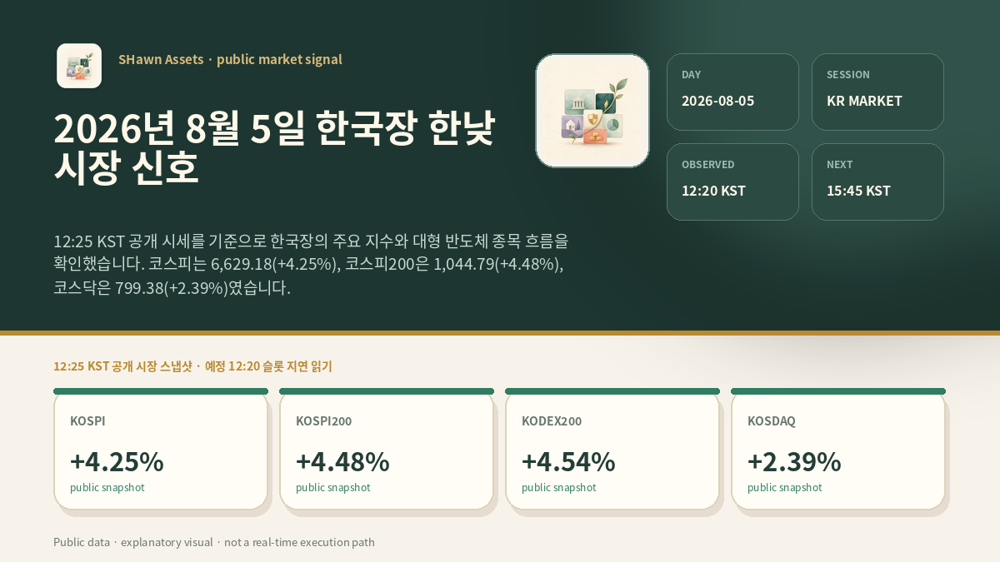
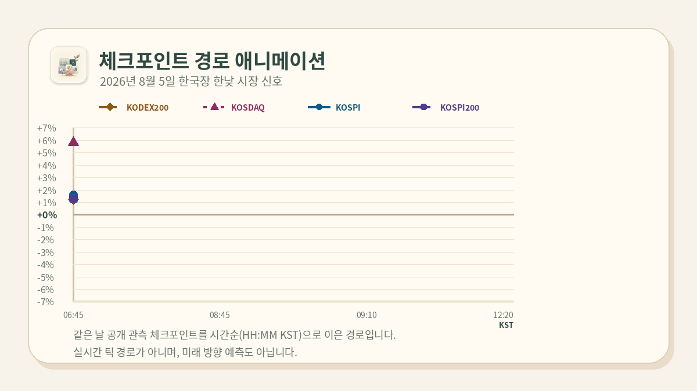

PUBLIC SNAPSHOT
PUBLIC-SAFE
지금 시장의 핵심 신호
VISUAL BRIEF
오늘의 공개 시장 보드
헤드라인·시점·시장별 변화폭을 한 장에 고정했습니다.

SIGNED MARKET SPREAD
0% 기준 변화폭
color = series↑↓ = sign

같은 날 공개 체크포인트 관측값을 시간순으로 이은 경로입니다. 실시간 틱 데이터가 아니며, 미래 방향 예측도 아닙니다. 색상·선 패턴·마커는 시리즈를, 화살표는 부호를 구분합니다.
무엇이 달라졌나
- 코스피는 6,629.18(+4.25%), 코스피200은 1,044.79(+4.48%), 코스닥은 799.38(+2.39%)였습니다. 같은 공개 시각의 지수 변화폭을 비교했습니다.
- KODEX200은 104,880(+4.54%)이었습니다. 삼성전자는 249,000(+3.75%), SK하이닉스는 1,680,000(+6.53%), 원익IPS는 98,100(+1.66%)으로 표시됐습니다.
- 10:14 KST 공개 스냅샷과 비교하면 주요 지수와 세 표본 종목의 표시값은 높아졌습니다. 단일 시점의 변화가 이후 경로를 뜻하지는 않습니다.
- 대형 반도체 가운데 변화폭 차이가 있어 개별 종목의 움직임을 지수 전체 움직임과 구분해 확인합니다.
- 외국인·기관·프로그램 및 독립 선물의 동일시각 공개값은 이 화면에 포함하지 않았습니다. 해외·환율·금리 자료는 관측 시점이 달라 국내 현물값과 직접 연결하지 않습니다.
다음 확인표
지수의 장중 위치
코스피와 코스피200의 변화폭이 오후에 확대 또는 축소되는지 같은 공개 시각으로 확인합니다.
대형 반도체의 동조
세 표본 종목의 변화폭이 광역 지수와 같은 방향인지 다음 시점에 다시 확인합니다.
지수 간 변화폭 차이
코스닥과 대형주 중심 지수의 차이가 이어지는지 분리해 비교합니다.
공개 수급값
외국인·기관·프로그램 수치는 동일 기준시각의 공개값이 교차확인될 때만 해석에 더합니다.
한계와 읽는 법
- 표시값은 12:25 KST 공개 시세 스냅샷이며 제공처와 갱신 시점에 따라 달라질 수 있습니다.
- 그래프는 공개 체크포인트 변화폭을 설명하는 시각화이며 실제 틱 경로나 미래 방향을 뜻하지 않습니다.
- 시장별 관측 시각이 다르므로 국내 현물값과 해외·환율·금리 자료를 직접 원인으로 연결할 수 없습니다.
- 이 글은 교육·해설용 공개 시장 자료이며 투자 조언이 아닙니다.
SHawn Assets · public market explanation surface